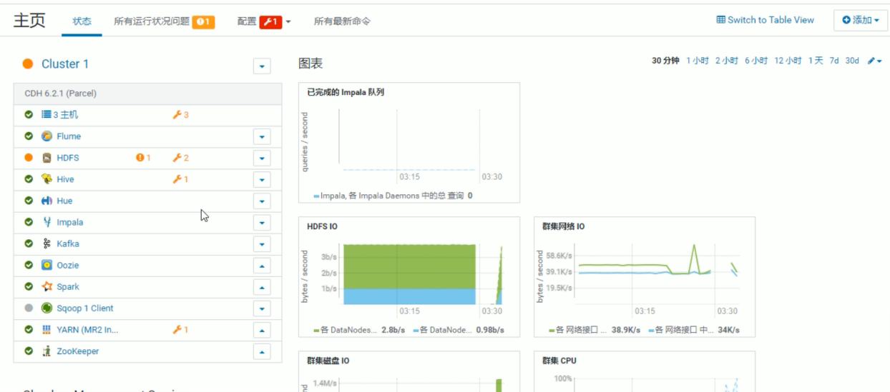
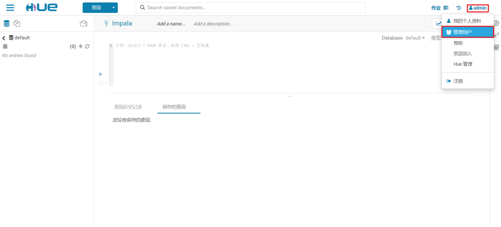

技能描述
-
1、擅长数据结构和算法、设计模式、架构实战：场景分析、技术选型、重视规范并了解发展趋势、源码解读并理解设计思想、用实际项目实战验证所有理论
-
2、擅长Java + Scala + Flume + Kafka + Sqoop + MySQL + HDFS + Hive + TeZ + HBase + Spark/Flink + Presto + Druid + Kylin + Azkaban + nginx + springcloud + Redis + ElasticSearch 的电商类数据仓库架构
-
3、擅长基于Apache开源版本的Hadoop的大数据数仓项目：Java + Scala + Flume + Zookeeper + Kafka + Sqoop + MySQL + HDFS + YARN + Hive + TeZ + HBase + Spark + Presto + Druid + Kylin + Azkaban + nginx + springcloud + Redis + ElasticSearch 的数据采集、离线、准实时处理、数据可视化的电商类大数据仓库架构
-
4、擅长基于CDH版本的框架的大数据数仓项目：Java + Scala + CM（Cloudera Manager） + MySQL + Flume + Zookeeper + HDFS + YARN + Kafka + Hive + Oozie + Hue + Sqoop + Impala + Spark + nginx + springcloud + ElasticSearch + Redis + DataX的数据采集、离线、准实时处理、数据可视化的电商类大数据仓库架构
-
5、擅长基于Apache开源版本的Hadoop的大数据数处理ETL项目：Java + Scala + Logback + 离线数据文件 + Flume + Zookeeper + Kafka + Kettle/StreamSets/DataX + MySQL + HDFS + YARN + Hive + TeZ + HBase +MongoDb + Spark/Flink + Presto + Druid + Kylin + Azkaban + nginx + springcloud + ELK 的离线+实时的大数据ETL架构
-
6、擅长基于CDH版本的框架的大数据数仓项目：Java + Scala + Logback + 离线数据文件 + CM（Cloudera Manager） + MySQL + MongoDB + Flume + Zookeeper + HDFS + YARN + Kafka + Hive + Oozie + Hue + Sqoop + Impala + Spark + nginx + springcloud + ElasticSearch + Redis + Kettle/StreamSets/DataX的离线+实时处理、数据可视化的ETL架构
-
7、擅长大型分布式微服务架构与分布式事务的解决方案、IM架构、Java技术栈、golang技术栈、Scala技术栈、SpringCloud、Netty、Dubbo
-
8、擅长devops：k8s高可用集群 + docker+ Jenkins + gitlab + maven对应用服务进行持续集成
工作经验
-
2018/06-至今 |四川明达集团 |工业互联网项目 |工业云事业部负责人+架构师
1、2018年06月—2019年10月 上线了多个版本的工业云项目。
项目描述：
本项目结合实际业务场景试制相匹配的服务器设备、系统、微服务、数据库，并在生产环境 进行云端测试检验。项目达到的效果是实现了适用于工业制造企业、传统的业务的制造企业在智能决策、数据可视化、多维度数据分析、降本增效方面的工业云平台，促进工业企业生产的智能化、业务的数据化、数据的可视化，加速推动传统工业制造型企业的智能化转型升级，将推广到类似应用场景的其它的行业，产生较好的经济效益和价值，达到合作共赢的目的。
整个工业云平台有如下主要的子系统：
1、2019年05月—至今：上线了金蜜工业大脑项目、进销存系统、CRM、BI报表系统、工业云平台2.0、硅系工业大脑、砂石工业大脑、铬系工业大脑等相关的子系统；
2、2018年12月—至今：上线了领蜂供应链金融子系统；
3、2018年10月—2018年12月：上线线上蜂贸这个贸易子系统；
4、2018年06月—2019年5月：上线了蜂创物联这个物联网子系统。
责任描述：
1、负责参与需求评审、业务分析、技术选型、应用架构搭建、服务器资源申请、搭建研发环境、搭建测试环境、搭建生产环境；
2、负责设计分布式缓存的使用规则；
3、负责网关的搭建、代理分流；
4、负责自动部署脚本的编写和持续集成；
5、封装公共工具和公共模块；
6、管理技术团队、定技术规范、解决问题；
7、新技术的调研和人员培训。
-
2016/10-2018/05 |利信 |互联网金融贷款项目 |技术+管理
1、2016年10月—2018年05月 上线了互联网金融贷款（司机贷）项目。
项目描述：
该项目是与互联网金融贷款公司与渠道方合作的针对于货车司机的贷款项目。项目涉及到的产品类型有信用贷、现金贷和本公司自有渠道的贷款产品，有授信、借款、放款、还款流程，流程紧密相接，都是以各种不同的微服务的形式分布于各个生产服务器之上，并伴随着灰度发布，既可以保证上线之前的内测和自动切换，又可以解决特殊业务需要第三方客户审核才能发布新版APP的业务场景。
责任描述：
1、负责参与需求评审、业务分析、技术选型、项目建设、应用架构搭建、搭建研发环境、上线生产环境；
2、负责设计分布式缓存的使用规则；
3、负责网关的搭建、代理分流、实现灰度发布；
4、负责自动部署脚本的编写；
5、参与需求评审、任务排期、任务分配；
6、负责接口定义、安全加固、设置拦截策略；
7、根据需求修改部分源码；
8、封装公共工具和公共模块；
9、管理研发团队，分配任务和解决问题。
-
2014/03-2016/10 |北京掌中彩信息科技有限公司 |彩票项目 |高级研发工程师
1、2016年02月—2016年10月 上线了彩票项目、旅游项目。
项目描述：
重构老的票务网项目，重新设计原来的项目，改掉原有项目不能扩展的局限性；运用SOA这种面向服务的架构思想，通过信号量采用事件驱动机制来实现整个分布式项目中各个模块的相互协作，从而实现各个需求业务。
责任描述：
1、负责业务分析、服务器资源分析、技术选型、框架搭建、和项目建设；
2、负责自动部署脚本的编写；
3、参与需求评审、任务排期、任务分配；
4、负责接口定义和安全加固；
5、根据需求修改部分源码；
6、封装公共工具和公共模块。
2、2015年08月—2016年02月 上线了河南、新疆福彩中心O2O彩票系统项目。
项目描述：
本项目是河南福彩中心要求开发的一个具有选号、投注、和银联对接的前端表现为一个安卓客户端的项目，项目要求登录方式采用Oauth2.0协议，通过银联授权来登录这个客户端app，登录之后用户可以实现不同的选号、不同彩种的选号、和缩水选号等投注彩票的方式，并且通过银联支付，将数据传给银联，银联处理完成之后回调回来，将业务逻辑的状态修改正确，以及让用户查看到其所有的订单列表和每个订单的订单详情，以及由订单生成的票的所有信息 。
责任描述：
1、负责编写算法以最快的速度实现查询方圆5公里范围内的投注站的信息；
2、负责所有订单、订单详情、明细查询按需求显示；
3、负责修实现改投注站经纬度和站主信息的更改的功能、用户的登录检查功能；
4、负责将原来项目中写的socket功能模块移植到当前项目，并解决产生的多个IOC容器的问题，和生成票时产生的多线程并发而导致的逻辑问题；
5、负责解决在Servlet中不能直接使用依赖注入的问题；
6、负责实现使用扫描二维码并使用断点续传的方式下载客户端APP的功能。
3、2014年03月—2015年08月 上线了湖北福彩中心O2O彩票系统项目。
项目描述：
本系统是根据中国福彩中心的需求，以及各个省的地方福彩中心的特殊业务需求而开发出来的一种B2C类型的电商系统，身处异地的各个系统之间有业务通信，这些业务和支撑这些业务的技术造就了这么一个大型的网络应用系统；这个系统包含9大部分：由Apache负责将请求转发至后台（彩民手机端，嵌入了微信的二次开发）、后端使用一个tomcat集群、核心的业务逻辑和数据库操作都在Java项目发布的服务进行处理（负责核心业务处理）、再用一个Java工程发布的服务负责和其他系统进行交互（负责和热线出票系统交互）、用一个tomcat集群实现站主网页版（站主网页版）、用一个web项目实现和手机端的数据交互，安卓站主客户端模块、安卓彩民端模块、供福彩中心使用的OSS系统（这是一个单独的WEB后台管理系统），除了安卓客户端，每个模块都是单独部署在Linux服务器上的一个子项目，项目之间用ICE中间件来传递json数据进行通信。
责任描述：
负责OSS后台管理系统中用户短信验证码信息的查询和展示、负责彩民手机端微信二次开发以及在微信的基础上加上客户的业务需求（比如用户只能通过微信入口注册、用户的模板消息推送、从微信端拉取关注本系统公众号的所有用户信息列表、自定义菜单、事件消息处理和推送、文本消息的处理和推送）、负责使用Oauth2.0协议的授权码模式在o2o系统上对异地的系统进行交互，让异地的系统中的用户可以授权给o2o系统进行登录异地系统，负责用户免密码支付功能的编写等。
-
2012/03-2014/03 |鸿富锦精密电子有限公司 |企业管理系统项目 |Java研发
1、2013年08月—2014年03月 上线了百易CRM 客户关系管理系统。
项目描述：
本系统是对客户基本信息、联系人信息、交往信息、客户服务信息的充分共享和规范化管理；通过对销售机会、客户开发过程的追踪和记录，提高新客户的开发能力并在客户将要流失时系统及时预警，以便销售人员及时采取措施，降低损失,并希望系统提供相关报表，以便公司高层随时了解公司客户情况。系统包括：营销管理、客户管理、服务管理、统计报表、基础数据和权限管理六个功能模块。
责任描述：
主要负责营销管理模块、服务管理模块的实现、权限模块、以及定时调度功能的实现。
2、2012年11月—2013年07月 上线了B2C商务综合管理系统。
项目描述：
该系统主要是用于调查分析，有6个模块（用户注册，新建调查，我的调查，参与调查，用户权限管理，角色管理），系统采用三层结构的开发方式以Mybatis作为持久层，以Spring作为管理业务逻辑层，以SpringMVC作为呈现层, 使用JfreeChart生成各种报表作为统计分析。
责任描述：
负责系统的建模，数据库，JavaBean构建等工作，完成登录注册，jsp页面编写、权限功能的实现。
3、2012年03月—2012年10月 上线了中青旅行社有限公司业务管理系统。
项目描述：
整个项目分为网上客户前台使用的功能平台，管理员所使用的系统管理后台。系统用户主要分为两大类用户：网上顾客、系统管理员。针对两类用户实现的功能：网上顾客--浏览、搜索产品、维护购物车、填写/确认/修改订单、注册、注销、登陆、查看/修改信息。系统管理员—发布产品、维护产品信息、维护用户信息、订单处理，系统维护。模块划分：用户模块、权限模块、部门模块、产品模块、订单模块、管理员模块。
责任描述：
主要负责该项目前台产品展示和前后台表单数据的验证及部分单元测试，和上传下载、分页等功能的实现。
部分作品展示
-
CDH6.X的CM平台

-
CM平台上的Hue

自我介绍
本人工作过的地域有北京、四川，在大型上市公司和中小型的创业公司都工作过，做过互联网O2O彩票项目、互联网金融类项目、新零售项目、电商类项目、小程序类项目等等，有较强的环境适应能力和工作能力,擅长前后端分离+微服务架构+大数据架构与团队管理。有从0-1独立搭建整个公司所有架构的经验，能独立从应用技术选型、物理服务器规格选型、购买、虚拟化；云服务器的规格选型、购买，负责公司的所有技术架构搭建与团队管理工作；擅长团队管理：定规范、使用计划+决策方式的管理模式；负责技能培训、注重团队意识。